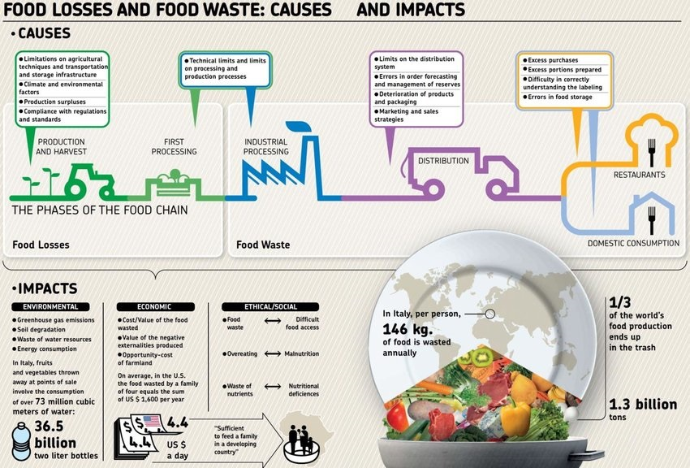

In 2011, FAO presented the estimate that around 1/3 of the world’s food was lost or wasted every year. Since then, much has changed in the global perception of the problem.
Food loss and waste has indeed become an issue of great public concern. The 2030 Agenda for Sustainable Development reflects the increased global awareness of the problem.
Target 12.3 of the Sustainable Development Goals calls for halving per capita global food waste at retail and consumer levels by 2030, as well as reducing food losses along
the production and supply chains. To provide more clarity on the subject and to measure progress towards SDG Target 12.3, FAO’s 2011 estimate is in the process of being
replaced by two separate indices: the Food Loss Index (FLI) and the Food Waste Index (FWI). The FLI, prepared by FAO, provides new loss estimates from post-harvest up to,
but not including, the retail stage. Food waste by retailers and consumers is not included in the FLI. Initial estimates of the FLI tell us that around 14 percent of the
world’s food is lost from post-harvest up to, but excluding, the retail level. The FWI, for which estimates calculated by UN Environment are forthcoming, will provide global
estimates on the food wasted at the retail and consumption levels. Food loss is the decrease in the quantity or quality of food resulting from decisions and actions by food
suppliers in the chain, excluding retailers, food service providers and consumers. Empirically, it refers to any food that is discarded, incinerated or otherwise disposed of
along the food supply chain from harvest/slaughter/catch up to, but excluding, the retail level, and does not re-enter in any other productive utilization, such as feed or seed.
Food loss, as reported by FAO in the FLI, occurs from post-harvest up to, but not including, the retail level. Food waste refers to the decrease in the quantity or quality of
food resulting from decisions and actions by retailers, food service providers and consumers. Food is wasted in many ways: Fresh produce that deviates from what is considered optimal,
for example in terms of shape, size and color, is often removed from the supply chain during sorting operations. Foods that are close to, at or beyond the “best-before” date are
often discarded by retailers and consumers. Large quantities of wholesome edible food are often unused or left over and discarded from household kitchens and eating establishments.
Less food loss and waste would lead to more efficient land use and better water resource management with positive impacts on climate change and livelihoods.
Meanwhile 800 million people go to bed hungry every night. That is 1 in 9 people on the planet who are starving or malnourished. Each and every one of them could be sufficiently fed on less than a quarter of the food that is wasted
in the USA, UK and Europe each year.Because we have a globalised food supply system, demand for food in the West can drive up the price of food grown for export in developing countries, as well as displace the growth of crops to
feed native populations and drive accelerated degradation of natural habitats.And, hunger is not just a problem that’s happening ‘somewhere else’ – in the UK for example, over 1 million people accessed a food bank last year, whilst
in the USA 40 million Americans live in food poverty.
In the UK the average family throws away 22% of their weekly shop, which is worth £800 per year. In the US, the per-family equivalent is worth a staggering $2,275 each year!So, the bad news is we are half the problem. But the good
news is….. this means we can be half the solution!
Meanwhile 800 million people go to bed hungry every night. That is 1 in 9 people on the planet who are starving or malnourished. Each and every one of them could be sufficiently fed on less than a quarter of the food that is wasted
in the USA, UK and Europe each year.Because we have a globalised food supply system, demand for food in the West can drive up the price of food grown for export in developing countries, as well as displace the growth of crops to
feed native populations and drive accelerated degradation of natural habitats.And, hunger is not just a problem that’s happening ‘somewhere else’ – in the UK for example, over 1 million people accessed a food bank last year, whilst
in the USA 40 million Americans live in food poverty.
On the other hand, food waste is a widespread issue throughout the country at almost all stages of the supply chain. A survey by Electrolux on 4,000 households in eight Asia-Pacific countries suggested that Vietnam is the second largest producer of food waste in the region, behind China. 87 percent of the households admitted that they waste two plates of food per week on average.
There are many reasons why Vietnamese people waste so much food. Culturally, preparing more food than necessary is considered a gesture of hospitality and generosity. This has become a custom not only in families but also in restaurants and ceremonies. While Vietnamese people have a habit of saving leftovers for the next meals, nearly 50 percent of people surveyed said that they often forget about excess food or fresh ingredients left in the fridge.
On the other hand
Food loss and waste is a major issue worldwide with deep socio-economic and environmental impacts. In Vietnam Latest figures will reveal that, on average, a quarter of the harvested food is lost before it actually reaches processing plants or distribution centers. The total average loss and waste would reach more than a half of what is produced. The Food and Agriculture Organization of the United Nations (FAO) stated that around one-third of all food that is produced in the world is lost or wasted, which represents 1.3 billion tons of food per year or US$ 990 billion in economic losses. Food losses occur during production, post-harvesting (handling, storage, and transportation) and processing stages of the food supply chain, whereas food waste is generated by retailers’ activities and consumers’ behavior. On the other hand, food waste is a widespread issue throughout the country at almost all stages of the supply chain. A survey by Electrolux on 4,000 households in eight Asia-Pacific countries suggested that Vietnam is the second largest producer of food waste in the region, behind China. 87 percent of the households admitted that they waste two plates of food per week on average. There are many reasons why Vietnamese people waste so much food. Culturally, preparing more food than necessary is considered a gesture of hospitality and generosity. This has become a custom not only in families but also in restaurants and ceremonies. While Vietnamese people have a habit of saving leftovers for the next meals, nearly 50 percent of people surveyed said that they often forget about excess food or fresh ingredients left in the fridge. On the other hand, food waste is a widespread issue throughout the country at almost all stages of the supply chain. A survey by Electrolux on 4,000 households in eight Asia-Pacific countries suggested that Vietnam is the second largest producer of food waste in the region, behind China. 87 percent of the households admitted that they waste two plates of food per week on average. There are many reasons why Vietnamese people waste so much food. Culturally, preparing more food than necessary is considered a gesture of hospitality and generosity. This has become a custom not only in families but also in restaurants and ceremonies. While Vietnamese people have a habit of saving leftovers for the next meals, nearly 50 percent of people surveyed said that they often forget about excess food or fresh ingredients left in the fridge.
